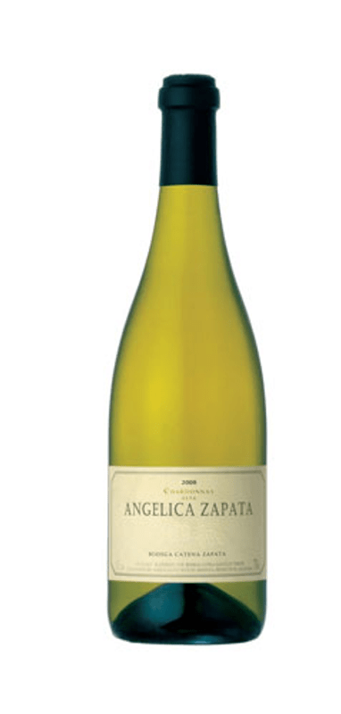

Nuestros vinos!
Catena Zapata Estiba Reservada
Catena Zapata ha identificado los lotes de mejor calidad dentro de los viñedos de la familia. El cultivo y cuidado manual de dichos lotes ha permitido identificar aquellas plantas que, en forma consistente, producen la mejor fruta. Estas plantas son marcadas en el viñedo con una cinta roja, que indica el cuidado especial que se debe prestar a las mismas. Cosechadas por separado, en diferentes momentos, las plantas “Zapata” conforman el origen del vino Catena Zapata Estiba Reservada.
$160.000
Achaval-Ferrer Finca Altamira
Altamira es montaña, clima extremo. Quietud y calma se conjugan con la intensidad del Tunuyán alto. Es la más proporcionada de las Fincas ya que posee una gama aromática inmensa, con notas que van desde frutas negras y rojas pasando por flores, especias y minerales. Es rica, fresca y opulenta. Compleja y fascinante. Altamira siempre nos sorprenderá con cada nueva cosecha.
$60.000
 Vinos Blancos
Vinos Blancos
Angélica Zapata Chardonnay
Es un “single vineyard” que refleja características propias de la zona de gran altitud en donde se origina. Con días soleados y cálidos, y noches frescas al pie del Cordón del Plata, las uvas de Chardonnay adquieren una madurez plena y bien balanceada. Su color es amarillo intenso con reflejos verdosos claros. En nariz se presenta concentrado e intenso, con aromas de frutas cítricas y un toque mineral. En boca, de impacto dulce, untuoso, es brillante y fresco con sabores a frutas maduras, notas de vainilla y una excelente acidez natural que le otorga un final largo y persistente.

$19.000
Susana Balbo Signature Rosé
Este Rosé es una muestra del trabajo en equipo de Susana junto a sus hijos, quienes decidieron experimentar con un nuevo vino, fresco, aromático, de color rosa muy seductor elaborado “a la Provence” donde el equipo enológico utiliza técnicas similares a las implementadas para los blancos: cosecha temprana, una sutil presión para alcanzar ese rosa suave que recuerda a la piel de la cebolla o al salmón. El resultado, un imbatible vino fresco, cítrico, mineral con aromas dulces a frutos rojos.
$17.000
Rosell Boher Brut
Este espumante se desarrolló bajo el Método Tradicional o Champenoise, respetando un tiempo mínimo sobre borras de entre 30 y 36 meses. Su composición es de 60% Pinot Noir y 40% Chardonnay de la Finca Los Árboles en Tunuyán, a 1250msnm. Valle de Uco, Mendoza, Argentina. Categoría: Brut.
$19.000